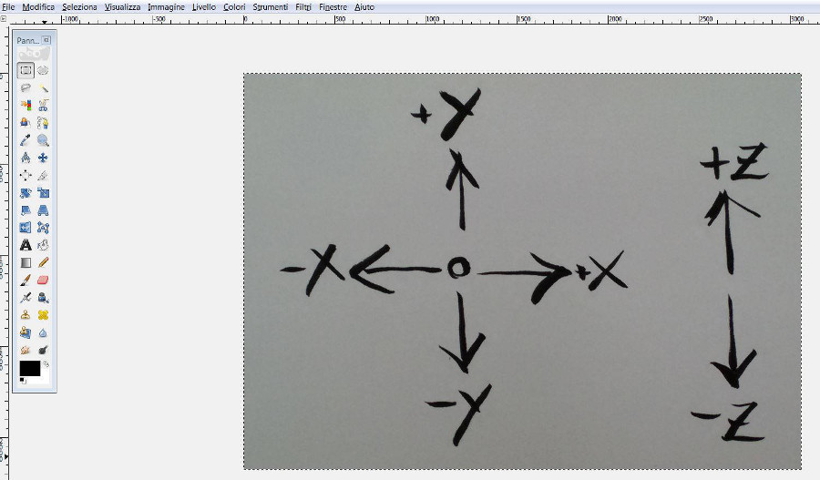
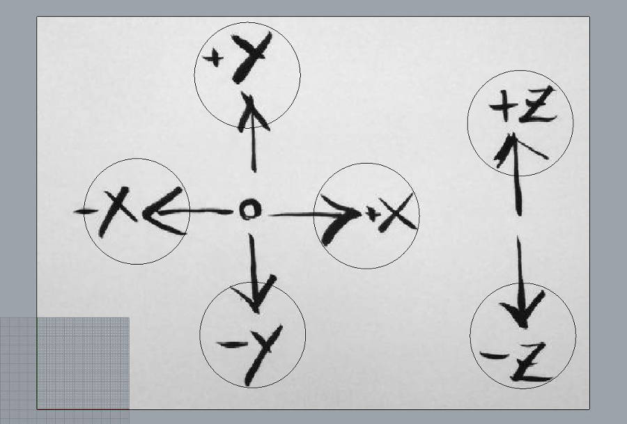
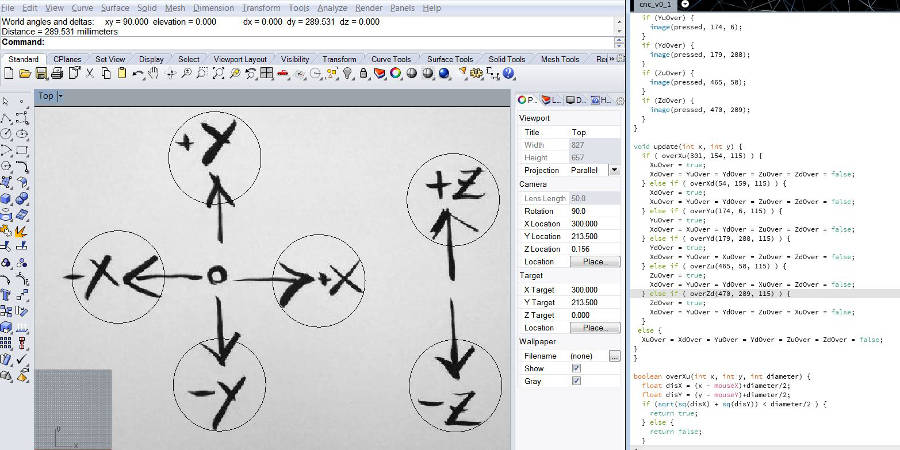
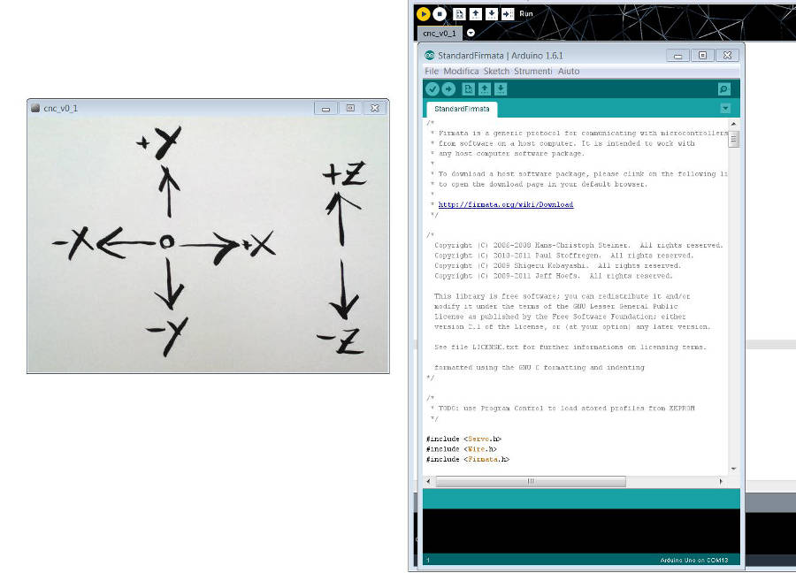

Being Smill a CNC machine it would be interesting to design a simple interface to move it to test it before start with the G-code interpreter. To do so I used Processing and Firmata. The main PCB is not ready yet, so, to test the interface I'll use an Arduino and a breadboard. As soon as the board will be ready I'll test it again with it.
The main idea is to take a sketch done by hand and use it as an interface. So I did a very simple interface with the 3 Axis. After that I edited in gimb and resized, to the dimension of the frame in Procesing.

To understand when the mouse is over the sensitive area and where this area is, i mesured with rhino where to put the sensitive areas (reppresented by the circles).

I used the distance between the sensitive circles and the the upper-left corner. these were the reference for the position in Processing of the corresponding buttons.

The design of the buttons is a simple image that appears over the proper position when the mouse is on, blent in "Multiply".
To communicate with the board I used a stendard Firmata, a firmware for arduino and combatible boards. This takes care of the serial communication and all the setting needed, making everything very simple.
Here the result when the programm is lauched

The code used is attacehd here and the zip file has the processing code, and the two images used.
import processing.serial.*;
import cc.arduino.*;
Arduino arduino;
PImage bg;
PImage pressed;
boolean XuOver = false;
boolean XdOver = false;
boolean YuOver = false;
boolean YdOver = false;
boolean ZuOver = false;
boolean ZdOver = false;
void setup() {
size (600, 427);
pressed = loadImage("pressed.jpg");
// Prints out the available serial ports.
println(Arduino.list());
// Modify this line, by changing the "0" to the index of the serial
// port corresponding to your Arduino board (as it appears in the list
// printed by the line above).
arduino = new Arduino(this, Arduino.list()[2], 57600);
// Alternatively, use the name of the serial port corresponding to your
// Arduino (in double-quotes), as in the following line.
//arduino = new Arduino(this, "/dev/tty.usbmodem621", 57600);
// Configure digital pins 4 and 7 to control stepper motors.
arduino.pinMode(2, Arduino.OUTPUT);
arduino.pinMode(3, Arduino.OUTPUT);
arduino.pinMode(4, Arduino.OUTPUT);
arduino.pinMode(5, Arduino.OUTPUT);
arduino.pinMode(6, Arduino.OUTPUT);
arduino.pinMode(7, Arduino.OUTPUT);
arduino.pinMode(13, Arduino.OUTPUT);
}
void draw() {
background(loadImage("bg.jpg"));
blendMode(MULTIPLY);
update(mouseX, mouseY);
if (XuOver) {
image(pressed, 301, 154);
arduino.digitalWrite(2, Arduino.HIGH);
if (mousePressed)
{
arduino.digitalWrite(3, Arduino.HIGH);
arduino.digitalWrite(3, Arduino.LOW);
}
}
if (XdOver)
{
image(pressed, 54, 159);
arduino.digitalWrite(2, Arduino.LOW);
if (mousePressed)
{
arduino.digitalWrite(3, Arduino.HIGH);
arduino.digitalWrite(3, Arduino.LOW);
}
}
if (YuOver) {
image(pressed, 174, 6);
if (mousePressed)
{
arduino.digitalWrite(5, Arduino.HIGH);
arduino.digitalWrite(4, Arduino.HIGH);
delay(10);
arduino.digitalWrite(4, Arduino.LOW);
delay(10);
}
}
if (YdOver) {
image(pressed, 179, 288);
if (mousePressed)
{
arduino.digitalWrite(5, Arduino.LOW);
arduino.digitalWrite(4, Arduino.HIGH);
delay(10);
arduino.digitalWrite(4, Arduino.LOW);
delay(10);
}
}
if (ZuOver) {
image(pressed, 465, 58);
if (mousePressed)
{
arduino.digitalWrite(7, Arduino.HIGH);
arduino.digitalWrite(6, Arduino.HIGH);
delay(10);
arduino.digitalWrite(6, Arduino.LOW);
delay(10);
}
}
if (ZdOver) {
image(pressed, 470, 289);
if (mousePressed)
{
arduino.digitalWrite(7, Arduino.LOW);
arduino.digitalWrite(6, Arduino.HIGH);
delay(10);
arduino.digitalWrite(6, Arduino.LOW);
delay(10);
}
} else
{
for (int i=0; i<14; i++)
{
arduino.digitalWrite(i, Arduino.LOW);
}
}
}
void update(int x, int y) {
if ( overXu(301, 154, 115) ) {
XuOver = true;
XdOver = YuOver = YdOver = ZuOver = ZdOver = false;
} else if ( overXd(54, 159, 115) ) {
XdOver = true;
XuOver = YuOver = YdOver = ZuOver = ZdOver = false;
} else if ( overYu(174, 6, 115) ) {
YuOver = true;
XdOver = XuOver = YdOver = ZuOver = ZdOver = false;
} else if ( overYd(179, 288, 115) ) {
YdOver = true;
XdOver = YuOver = XuOver = ZuOver = ZdOver = false;
} else if ( overZu(465, 58, 115) ) {
ZuOver = true;
XdOver = YuOver = YdOver = XuOver = ZdOver = false;
} else if ( overZd(470, 289, 115) ) {
ZdOver = true;
XdOver = YuOver = YdOver = ZuOver = XuOver = false;
} else {
XuOver = XdOver = YuOver = YdOver = ZuOver = ZdOver = false;
}
}
boolean overXu(int x, int y, int diameter) {
float disX = (x - mouseX)+diameter/2;
float disY = (y - mouseY)+diameter/2;
if (sqrt(sq(disX) + sq(disY)) < diameter/2 ) {
return true;
} else {
return false;
}
}
boolean overXd(int x, int y, int diameter) {
float disX = (x - mouseX)+diameter/2;
float disY = (y - mouseY)+diameter/2;
if (sqrt(sq(disX) + sq(disY)) < diameter/2 ) {
return true;
} else {
return false;
}
}
boolean overYu(int x, int y, int diameter) {
float disX = (x - mouseX)+diameter/2;
float disY = (y - mouseY)+diameter/2;
if (sqrt(sq(disX) + sq(disY)) < diameter/2 ) {
return true;
} else {
return false;
}
}
boolean overYd(int x, int y, int diameter) {
float disX = (x - mouseX)+diameter/2;
float disY = (y - mouseY)+diameter/2;
if (sqrt(sq(disX) + sq(disY)) < diameter/2 ) {
return true;
} else {
return false;
}
}
boolean overZu(int x, int y, int diameter) {
float disX = (x - mouseX)+diameter/2;
float disY = (y - mouseY)+diameter/2;
if (sqrt(sq(disX) + sq(disY)) < diameter/2 ) {
return true;
} else {
return false;
}
}
boolean overZd(int x, int y, int diameter) {
float disX = (x - mouseX)+diameter/2;
float disY = (y - mouseY)+diameter/2;
if (sqrt(sq(disX) + sq(disY)) < diameter/2 ) {
return true;
} else {
return false;
}
}